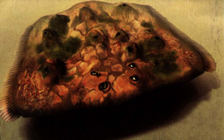
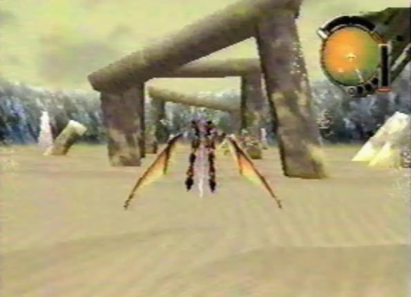
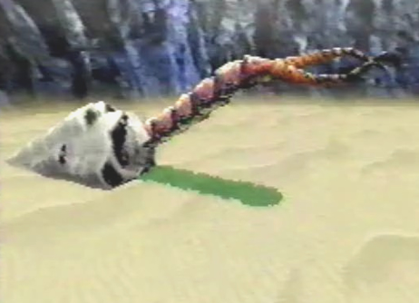
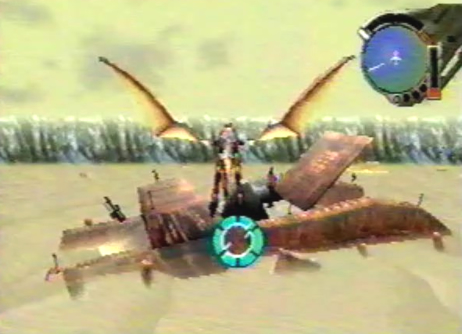
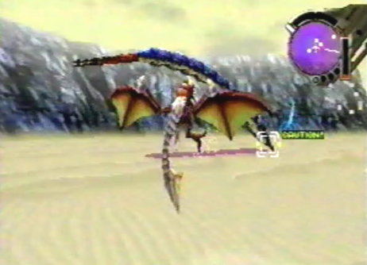
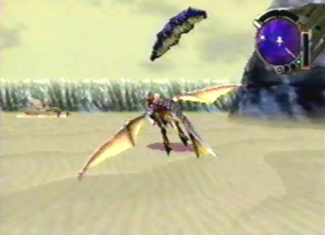
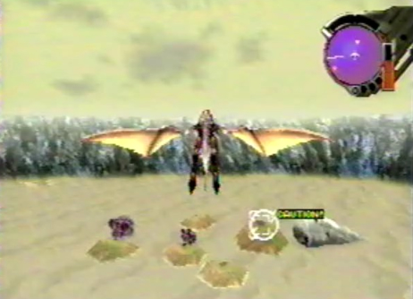
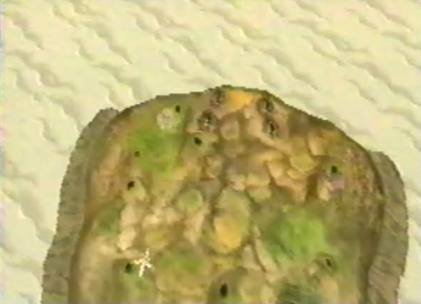
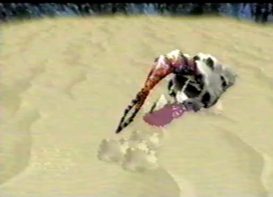

Diary Entry 8: (Garil Desert) Worm Lair The Most Disgusting Creature Alive! We found ourselves in the Garil Desert. Many sand worms of all shapes and sizes could be seen burrowing in and out of the sand. Gash told me we must be in a nest. He said not to harm them and they would leave us alone. I took his advice and continued on to the southeast end. It was here that we stumbled upon something strange. Weird mounds were sticking out of the sand. A most horrifying smell was leaking out of them and into our noses! Gash told me, they weren't just mounds sticking out of the sand but the most disgusting creature alive, a Lathum! It emerged from the sand and we had no choice but to do battle with it. After it was defeated, a red worm crashed through an underground tunnel. It was our way out! We flew into the tunnel to our next destination.  |
|
| Divine
Overview |
 1. When you first enter the Worms Lair, look for 3 arches. Now fly through them all! |
 2. A red worm will emerge from the sand and fly into an opening just past the arches. Inside, is a secret worm passage which contains 3 Shield Chips! |
 3. In the middle of the Worm Lair, you will find the wreckage of an Ancient Age ship. You can't enter it yet as you will need a laser rank of level 6. Once you acquire a laser rank of level 6, come back and enter the ship to find the Extra Class berserk technique Plasma Swarm! |
 4. Throughout the area, you will find many worms just hanging around burrowing into the sand. If you lock-on to any of them, they get annoyed and make a loud noise. |
 5. There is also a little baby worm jumping in and out of the sand. |
 6. Near the southeast corner of the desert, you will find something strange. What could it be? |
 7. IT'S A LATHUM, THE MOST DISGUSTING CREATURE ALIVE!! |
 8. After the Lathum is subdued, a red worm will make a passage for you. This passage will take you to your next destination, the Green Oasis. |